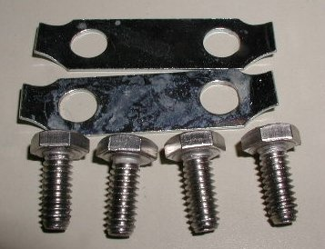
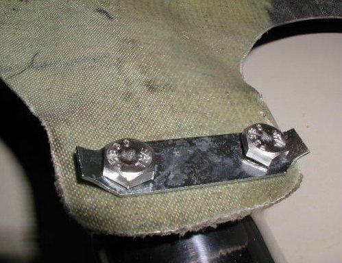
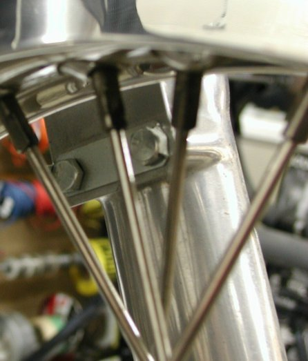

This mounting kit is an alternative way to mount the front fender on Commandos and is especially
good for fiberglass fenders. The stock mounting consists of four 1/4" studs, washers and nuts.
If you are concerned about nuts backing off and do not want to use Loctite on the nuts, you would drill and safety wire the nuts.
With this mounting kit which consists of four stainless bolts and two tab washers, the fender is secured better and with a lot less work.
The tabs spread the bolt pressure across the fender flange instead of just around the bolt holes
and they prevent the bolts from coming loose.
These are factory tab washers used to secure the Oil Filter Housing, but work great for
securing the fender. The holes on the tabs do need to be elongated slightly to match the slightly
longer hole spacing on the slider. The tabs in this picture have been modified, and as you
can see, not much needs to be filed and it just takes a second to do the filing.

This picture shows how a fiberglass fender is mounted to a slider. In this picture the bolts are just finger tight and
the tabs are not bent over yet to secure the bolts.

This picture shows the stock fender actually mounted on a bike with the tabs bent over to secure
the bolts from coming loose.
The current price for mounting kit (part # 14-000007/MK) is
$5.16,
as of
02/12/21.
This page was written and designed by F. H. Eaton
& Associates if you have any questions or comments please
contact us at infon@fheaton.com